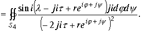
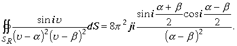
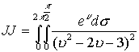

|
В. И. ЕЛИСЕЕВ ВВЕДЕНИЕ В МЕТОДЫ ТЕОРИИ
ФУНКЦИЙ ПРОСТРАНСТВЕННОГО КОМПЛЕКСНОГО ПЕРЕМЕННОГО |
|
Продолжение
2 из 2. 1.7.4. Лемма К. Жордана в комплексном
пространстве 
Для первого интеграла примем
,
для второго интеграла
,
для третьего интеграла
,для четвертого интеграла
.
Подставим замену переменных в интегралы и возьмем предел при стремлении радиуса поверхности , окружающего изолированную точку к нулю.
проведем алгебраические операции под знаками интеграла и перейдем к пределу, получимСледовательно исходный интеграл равен
, однако с учетом, что вычеты изолированных точек взяты также дважды, окончательно будем иметьРезультат расчета совпадает с предыдущим вычислением.
Проведенные исследования показали, что в пространстве удалось реализовать теорию вычетов для поверхностных интегралов.
Пример Вычислить интеграл
, где -поверхность сферы радиусаПодынтегральная функция нерегулярна в двух точках
.
Интеграл приобретает вид
 .
.
Подынтегральная функция имеет четыре нерегулярные точки , а интеграл имеет четыре полюса второго порядка. Полюс второго порядка обеспечивается простым полюсом плюс полюс первого порядка от произведения делителей нуля.
Таким образом, изолированная ось в пространстве увеличивает порядок полюса на единицу.
Поверхность
Построим сферы
. Вычислим интегралы стоящие в правой части равенства. Рассмотрим первый интеграл. Произведем замену переменной . В дальнейшем также будем иметь в виду следующие равенства.. Преобразуем интеграл
Произведя сокращения и беря предел при
Во втором интеграле делаем замену переменной
и учитывая равенства , преобразуем интеграл к видуПроведем сокращения и возьмем предел интеграла при
В третьем интеграле делаем замену переменной

 Перейдем к пределу при
Перейдем к пределу при 
.
В четвертом интеграле делаем замену переменной
 Перейдем к пределу при
Суммируя вычисленные интегралы в правой части исходного равенства интеграла , получим
. Проведем суммирование тригонометрических функций .
Получили окончательный результат

Пример Вычислить интеграл
.Возьмем вспомогательную функцию , равную подынтегральной функции в предыдущем примере.
Поверхность интегрирования составим из следующих частей: полусфера верхнего полупространства радиуса , полусферы около изолированных точекИз леммы Жордана видно, что
. Сумма вычетов При стремлении радиуса полусфер около точек к нулю ,имеем полную комплексную плоскость Z. Для оценки интегралов около этих полусфер рассмотрим лорановское разложение.
В числителе интерес представляет только второе произведение, лорановское разложение которого имеет вид.
.В результате в изолированной точке
.
Интеграл около изолированной точки
выразится в виде
Оба интеграла не имеют действительной пространственной части и не вносят вклад в вычисление .Интеграл в верхней половине пространства около изолированной точки
равен вычету, расчитанному выше в примере. В итоге имеем
Окончательно имеем интеграл
Пример.
Вычислить двойной интеграл

Решение. Область
G , ограниченная данной поверхностью, содержит четыре особые точки второго порядка . Этими особыми точками являются корни квадратного уравнения . которое находится в знаменателе подыинтегральной функции . В соответствии с алгебройКомплексного пространства
(1.2) пункта 1.1.2. четыре корня в пространстве
и может быть разложен на произведение линейных множителей по двум эквивалентным вариантамСогласно пункту 1.6 и формуле 1.64 интеграл
JJ будет равен сумме вычетов по всем особым точкам подынтегральной функцииВ силу единственности разложения в ряд Тейлора и Лорана (пункты и примеры в них 1.4.1,1.4.2) аналитических в выделенной области пространства функций и эквивалентности их разложения на произведение линейных множителей сумма вычетов по изолированным точкам
, равна сумме вычетов по изолированным точкам. В результате интеграл в пространствеМожно вычислить как
Произведем вычисления
Таким образом , суммы вычетов равны и окончательно интеграл равен
Eсли область интегрирования ограничена верхней половиной пространства, так что необходимо вычислить несобственный двойной интеграл

Подынтегральная функция удовлетворяет лемме (К.Жордана) пункт1.7.3.
В верхней половине пространства находится одна пространственная особая точка
.Как было показано выше сумма вычетов по особым точкам
эквивалентна сумме вычетов по особым точкам , поэтому интеграл будет равенОкончательно получим
.
Мини оглавление:
[0], [1.1.1, 1.1.2, 1.1.3, 1.1.4, 1.1.5, 1.1.6, 1.1.7, 1.1.8, 1.2, 1.2.1, 1.2.2, 1.2.2.a, 1.2.2.b, 1.2.2.c, 1.2.2.d, 1.2.2.e, 1.2.2.f, 1.2.2.g, 1.2.2.h, 1.2.3, 1.3.1, 1.3.2, 1.3.3, 1.3.4, 1.3.5, 1.3.6, 1.4.1, 1.4.2, 1.5, 1.6, 1.7.1, 1.7.2, 1.7.3.1, 1.7.3.2, 1.7.3.3, 1.7.4.1, 1.7.4.2, 1.8.1], [2.1, 2.2],[3.1, 3.2, 3.3, 3.4.1, 3.4.2, 3.4.3, 3.4.4, 3.4.5],[4.1, 4.2, 4.3, 4.4],[5.1, 5.1.Рис.52, 5.2, 5.3, 5.4, 5.4.Т1, 5.4.Т2, 5.4.Т3, 5.5.1, 5.5.2, 5.5.3, 5.5.4],[6.1.1, 6.1.2, 6.2.1, 6.2.2, 6.2.3, 6.2.4, 6.2.5, 6.3, 6.4.1, 6.4.2, 6.5.1, 6.5.2],[7.1, 7.2, 7.3, 7.4, 7.5, 7.6, 7.7.1, 7.7.2, 7.8.1, 7.8.2, 7.8.3, 7.9],[8.1, 8.2.1, 8.2.2, 8.3, 8.4, 8.5, 8.6, 8.6.T1, 8.7, 8.8.1, 8.8.2, 8.8.3, 8.9.1, 8.9.2, 8.9.3, 8.10, 8.10.T2, 8.10.T3],[9.1, 9.2, 9.3, Рис.88, 89, 90, 91, 92, 93, 94, 95, 96, 97, 98, 99, 100],[10.1, 10.2, 10.3, 10.4, 10.5, 10.6, 10.7, 10.8, 10.9, 10.10, 10.11, 10.12, 10.13, 10.14, 10.15.1, 10.15.2, 10.16.1, 10.16.2, 10.17, 10.18],[11]
Размещенный материал является электронной версией книги: © В.И.Елисеев, "Введение в методы теории функций пространственного комплексного переменного", изданной Центром научно-технического творчества молодежи Алгоритм. - М.:, НИАТ. - 1990. Шифр Д7-90/83308. в каталоге Государственной публичной научно-технической библиотеки. Сайт действует с 10 августа 1998.
E-mail: mathsru@gmail.com